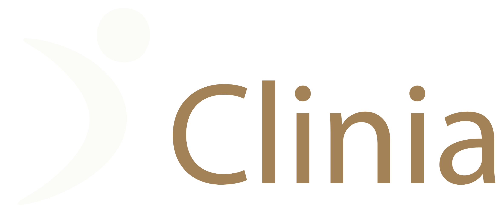
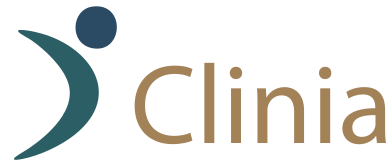
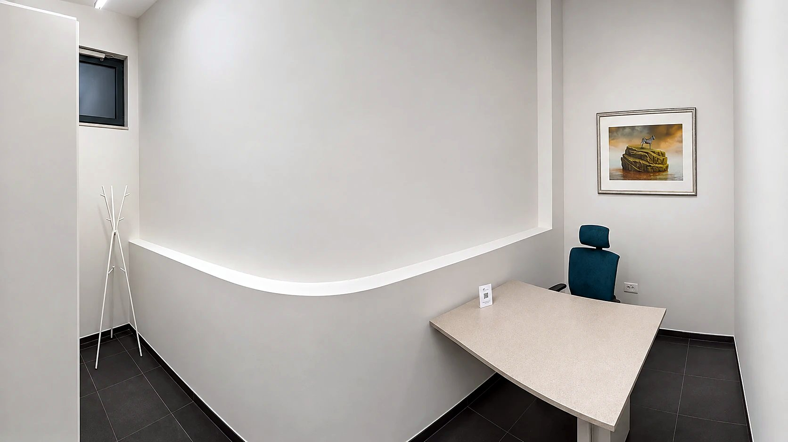

CLINIA APP · SITO · MONITOR · SOCIAL
Il dottore prenota la sua stanza una volta sola. Sito clinia.it, monitor in sala e social si aggiornano da soli.
Segui la presentazione sul tuo schermo mentre la racconto.
Progetto di FPM WebDesignTech · Francesco Paolo Morelli
L’IDEA

Il dottore sceglie stanza, giorni e orari. È l’unico posto dove si inserisce qualcosa.
La fonte di tutto
Il calendario dei medici, sempre aggiornato
Chi riceve oggi, cosa fa e a che ora
Post e storie pronti, con la grafica Clinia
COME FUNZIONA
2
L’app mette insieme tutti: chi c’è, in quale giorno, a che ora e in quale stanza.
Lun
Mer
Gio
3
Sito, monitor e social ricevono il calendario. Se il dottore cambia orario, cambia ovunque.
SUL SITO CLINIA.IT
Esempio
Il paziente vede chi c’è, in quale giorno e a che ora.
Un tocco su “Prenota” e si apre l’app con il dottore già scelto.
Nessuno aggiorna il sito a mano.
SUL MONITOR IN SALA
A rotazione, uno dopo l’altro, i medici del giorno.
Cambia da solo quando cambia una prenotazione.
Tra un medico e l’altro, i video di Clinia e delle stanze.
Esempio
PER I DOTTORI
Nome, specialità e orari su sito, monitor e social, senza fare nulla.
Chi li vede può prenotare subito, dall’app o dal sito.
Stanze, agenda, conferme e pagamenti delle visite.
Visite in videochiamata, pagate prima con la carta.
PER CLINIA
Più medici visibili, più pazienti, più ore di studio prenotate.
Stessi colori, stesso logo, stesse foto ovunque.
La segreteria non riscrive orari su sito, monitor e social.
Si pubblicano solo nome, specialità e orari. Mai dati dei pazienti.
I PROSSIMI PASSI
1
Da dicembre 2026, mese di prova gratuito
2
Il sito legge i turni prenotati nell’app
3
Medici del giorno e video di Clinia
4
Post e storie preparati dal calendario
Inquadra il codice con il telefono.
FPM WebDesignTech · fpm@fpmwebdesigntech.it
Gira il telefono in orizzontale per vedere le slide più grandi
SU FACEBOOK E INSTAGRAM
Post e storie pronti, con un senso
Clinia · Matera

Questa settimana in Clinia
Dermatologia lun e gio · Fisioterapia mar e ven · Neurochirurgia sab
Prenota dall’app o da clinia.it · Via La Martella 5/D, Matera
STORIA
Dott. Donato Panetta
Ortopedia · ogni mercoledì
L’app prepara i contenuti dal calendario.
Grafica Clinia sempre uguale: colori, logo, foto vere delle stanze e dei medici.
Clinia controlla e pubblica con un tocco.
Esempio